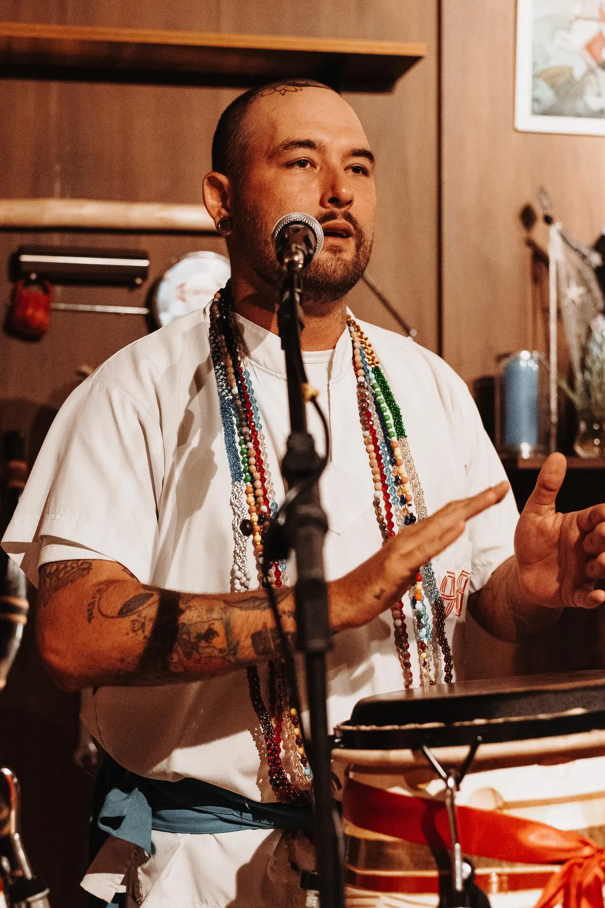
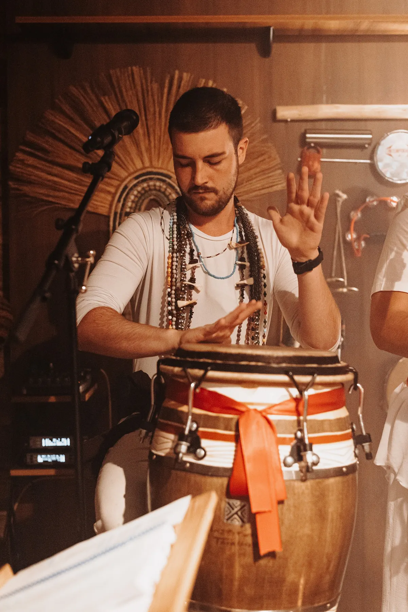

Guia do Médium
O manual da casa: a história, a missão, o regimento e os fundamentos da CUCA, escrito por Pai João Lucas de Ogum.

Material da casa para médiuns e para quem quer conhecer a CUCA a fundo.
O manual da casa: a história, a missão, o regimento e os fundamentos da CUCA, escrito por Pai João Lucas de Ogum.
A ordem da abertura da gira, para estudo da corrente.
Os pontos cantados da casa, organizados por linha.
Se o toco da entidade dirigente é o cérebro da gira, o atabaque é o seu coração.

De origem árabe, espalhado pela África e trazido ao Brasil, o atabaque se enraizou nas religiões afro-brasileiras. Nos ritos aparece em trio: o Rum, maior e grave, coordena a base e o tempo; o Lé, menor e agudo, cria variações e repiques; o Rumpi, médio, une os dois. Juntos formam a engoma. Com o coro de vozes, fazem a curimba.
Na tradição, cada tambor se liga a um arquétipo: Rum a Ogum, Rumpi a Xangô e Lé a Oxóssi. Cada toque é energia ordenada que bombeia força vital para o terreiro.
Canto e tambor caminham juntos. O ponto cantado é oração: chama, louva, descarrega, cura e ensina. O Samba é o médium que conduz os pontos e mantém a corrente firme. Na gira não se busca performance, e sim entrega: fé, vontade e sinceridade.
Tocar também é resistência. Por séculos os tambores foram perseguidos e silenciados, e nunca deixaram de ecoar.
O Ogã é o guardião do atabaque, servo do couro sagrado e da ancestralidade africana e indígena.Guia do Médium
Podcast
O podcast da casa: conversas sobre Umbanda, fundamentos e o dia a dia da corrente, para ouvir onde você estiver.
Ouvir no SpotifyGiras, festas, avisos e o dia a dia da casa.
Seguir no InstagramGira aberta toda segunda-feira, às 19h30. Senhas a partir das 19h.